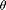
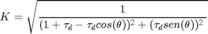

Contents
function [K,taud] = mimicParameters(Cycles)
Mimic digital filter parameters
This function computes the parameters needed by the digital mimic filter. The mimic filter filter the exponential decay presented in current signals during a fault. This function has input: Cycles - time constant in cycles This function returns: K - gain taud - time constant in ms
source: ditital mimic filter
Fundamental frequency
f = 60;
Fundamental period
T = 1/f;
window lenght in a cycle
N = 16;
Sampling frequency
fs = N*f;
Discretization
dtd = 1/fs;
Time constant in ms
tau = Cycles*T;
Time constant in unities
taud = round(tau/dtd);
 is the rotation angle in the unitary circle
teta = 2*pi/N;
K - It is computed to ensure a unity gain for the fundamental frequency

K=sqrt( 1/( ( (1+taud) - taud*cos(teta) )^2 + (taud*sin(teta))^2 ) );
end